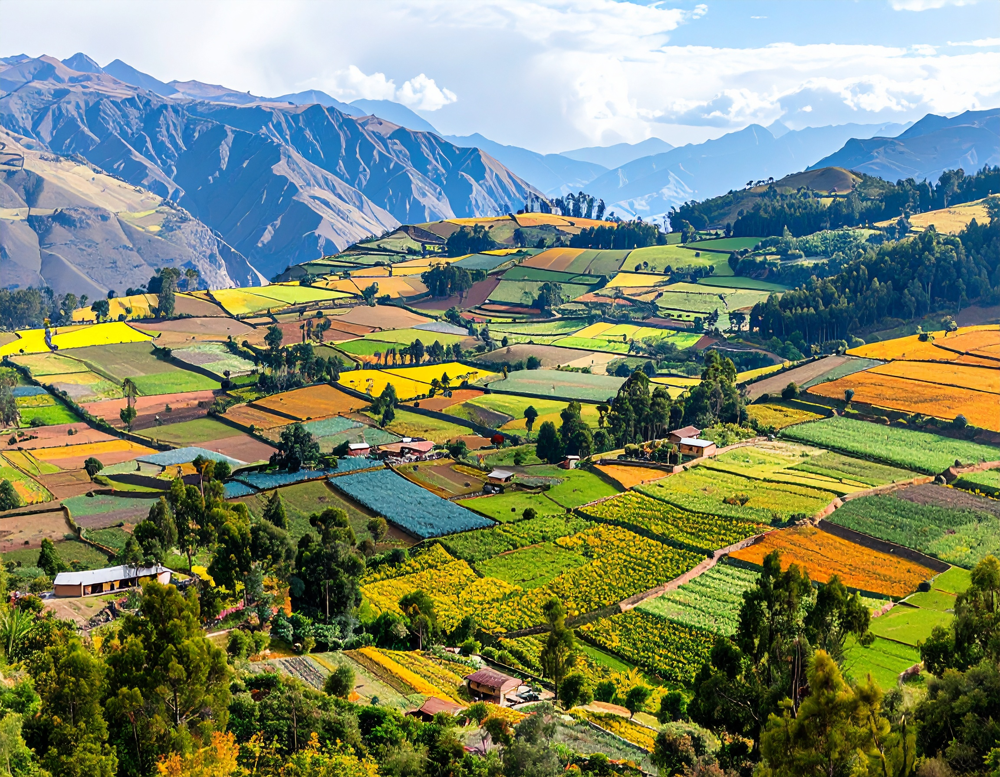

La naturaleza como cultura
El paisaje del Perú en 2060 refleja un compromiso con la sostenibilidad, la preservación cultural y la equidad social, alcanzado mediante enfoques impulsados por las comunidades. Los principios del Buen Vivir orientan tanto las actividades económicas como la gobernanza ambiental, asegurando que la naturaleza y las comunidades prosperen en armonía. Las diversas ecorregiones y paisajes característicos del país no solo se conservan, sino que se celebran como componentes integrales de la identidad nacional.

Características
 Cambio climático: RCP 2.6
Cambio climático: RCP 2.6
 Población: 37.21 millones
Población: 37.21 millones
 Desarrollo económico: 812 mil millones USD
Desarrollo económico: 812 mil millones USD
 Perspectiva de valor sobre la naturaleza: Principalmente relacional
Perspectiva de valor sobre la naturaleza: Principalmente relacional
 Áreas protegidas (proporción del Perú bajo protección): 30 % para 2030
Áreas protegidas (proporción del Perú bajo protección): 30 % para 2030

Cambio de valores y estilos de vida
Como respuesta a la homogeneización cultural y a la desconexión con la naturaleza derivadas de las tendencias de globalización neoliberal, la filosofía del Buen Vivir adquiere un atractivo generalizado en la sociedad peruana (1–3). Sus principios centrales—bienestar, suficiencia, colectivismo y la relación armoniosa entre las personas y la naturaleza (4) reavivan el reconocimiento social de la importancia cultural y espiritual de los paisajes peruanos, impulsando cambios económicos y políticos más amplios en la gestión del medio ambiente y los recursos naturales.
Ante el deseo de la población de vivir más cerca de la naturaleza, el aumento de la proporción de habitantes urbanos es relativamente pequeño: del 78 % al 81.5 % en 2060 ((5), según SSP3), lo que se traduce en asentamientos más extensos pero de menor densidad. En consonancia con el espíritu de autosuficiencia, las personas se esfuerzan por reducir su consumo y, en general, llevan estilos de vida más sostenibles.
Cambio de prioridades económicas
La concepción predominante de desarrollo económico se redefine según los principios del Buen Vivir. Esto da lugar a un cambio de paradigma. En este nuevo paradigma, se priorizan las actividades sostenibles. Se dan prioridad especialmente a las actividades que integran conocimientos tradicionales e indígenas. Se da prioridad a estas actividades sobre la mera maximización de la producción. Así, el PIB per cápita aumenta a 812 mil millones USD para 2060 (convertido con la paridad de poder adquisitivo de 2017), según lo proyectado en la SSP3 (6).
En agricultura se generalizan técnicas agroecológicas holísticas como la agroforestería, y se fomenta el cultivo de plantas botánicas y medicinales endémicas del Perú, promoviendo tanto la biodiversidad como la preservación del conocimiento tradicional. Esto se impulsa mediante, por ejemplo, la elaboración continua de planes estratégicos y de acción regionales sobre Biocomercio, que expanden los mercados nacionales de estos productos1. Además, las organizaciones de productores desempeñan un papel clave en el apoyo a los agricultores locales y en garantizar un acceso justo al mercado. Como resultado, la superficie agrícola total se expande moderadamente, aunque la intensidad de las labores sigue siendo baja, reflejando un firme compromiso con los valores culturales y el cuidado ecológico. De forma similar, se promueve y protege la pesca artesanal sostenible, respaldando a las comunidades costeras.
Las actividades extractivas, como la minería, continúan, pero ahora se regulan estrictamente para minimizar su huella ecológica. Se pueden conceder nuevos permisos, pero los requisitos legales mantienen relativamente baja la explotación real de estos sitios. El turismo se orienta hacia actividades basadas en la naturaleza que conectan a los visitantes con la cultura peruana, como las visitas a cooperativas agrícolas y los talleres de artesanía tradicional. Esto no solo apoya las economías locales, sino que refuerza la apreciación de los paisajes y las tradiciones. Estos cambios formalizan más la economía y los ingresos fiscales resultantes se reinvierten en el fortalecimiento de las economías locales.
Comunidades indígenas
Las comunidades indígenas experimentan una mayor autonomía y un resurgimiento cultural, guiados por los principios del Buen Vivir. El conocimiento ecológico tradicional se integra en la gobernanza y en las actividades económicas, garantizando un uso sostenible del suelo y la conservación de la biodiversidad. La seguridad de la tenencia de la tierra se refuerza mediante la concesión progresiva de los títulos pendientes hasta 2060. Estas áreas tituladas se clasifican como Otras Medidas Efectivas de Conservación basadas en Áreas (OECM), con la responsabilidad de gestión delegada a las comunidades. Los sistemas comunitarios de gestión del agua, inspirados en técnicas ancestrales, aumentan la resiliencia frente al cambio climático (7).
Gobernanza, planificación y gestión de recursos
En el ámbito político, la gobernanza de la tierra y los recursos naturales se fortalece mediante una mayor descentralización de responsabilidades hacia las autoridades departamentales. Además, la ciudadanía participa más en la toma de decisiones a través de foros de múltiples actores en los ámbitos nacional y regional, aprovechando éxitos existentes2 y incorporando innovaciones digitales (CivicTech)3. Estos procesos aumentan la transparencia de la normativa ambiental, fomentando la rendición de cuentas y la confianza pública en el Estado. La gestión del paisaje prioriza el acceso y uso equitativo de la tierra para satisfacer las necesidades materiales de la población, minimizando la degradación ambiental. Ello se logra mediante la aplicación eficaz de los planes de zonificación ecológica y económica y el estricto control de la contaminación. Se deroga la modificación de 2023 a la Ley Forestal y de Fauna Silvestre4 y la responsabilidad de la zonificación forestal vuelve al MINAM. El diseño de políticas se apoya en una agenda ampliada de investigación ambiental que integra el conocimiento ecológico tradicional para promover soluciones holísticas a la sostenibilidad (8).
Las comunidades rurales, sobre todo las indígenas, se benefician de la seguridad de la tierra mediante la titulación formal, lo que las faculta a participar activamente en prácticas sostenibles de manejo del suelo (9). En las áreas urbanas, la planificación mejora para integrar espacios verdes y tecnologías energéticamente eficientes. La implantación constante de proyectos de infraestructura en todo el país, especialmente en comunicaciones, reduce de forma significativa la desigualdad socioeconómica y mejora el acceso a la educación, la salud y otros servicios básicos (10). La red de transporte se desarrolla específicamente para apoyar el turismo de naturaleza sin afectar la integridad del paisaje.
La gestión de los recursos hídricos mejora notablemente gracias a sistemas comunitarios descentralizados que emplean tecnologías ancestrales del agua (11,12). Se revitalizan reservorios y canales seminaturales para garantizar la disponibilidad de agua, y los métodos de biorremediación mejoran la calidad hídrica tanto en zonas urbanas como rurales.
Restauración y protección ecológica
El Perú cumple su compromiso respecto al objetivo 3 del KM-GBF5 al ampliar, para 2030, la cobertura de áreas protegidas y OECM al 30 % del territorio nacional6. Las nuevas OECM se seleccionan específicamente para conservar paisajes característicos del país, equilibrando la representación de diversas ecorregiones y sitios de patrimonio cultural. Para fomentar la gestión local, estas OECM suelen designarse en tierras de comunidades indígenas, donde la gestión se delega a las propias comunidades7.
6 https://iucn.org/news/202409/oecms-collaborative-agenda-2025-2030-towards-achieving-target-3-global-biodiversity
7 https://es.wikipedia.org/wiki/Categor%C3%ADas_de_%C3%A1reas_protegidas_de_la_UICN
En las áreas protegidas nacionales, la gestión se centra en revertir la pérdida de biodiversidad, en particular la protección de especies culturalmente significativas, y en mitigar los conflictos entre personas y fauna silvestre. Paralelamente a la creación de nuevas áreas de conservación, los proyectos de restauración ambiental a gran escala han logrado recuperar tierras degradadas, permitiendo que prácticas tradicionales como la recolección de productos forestales no maderables vuelvan a florecer.